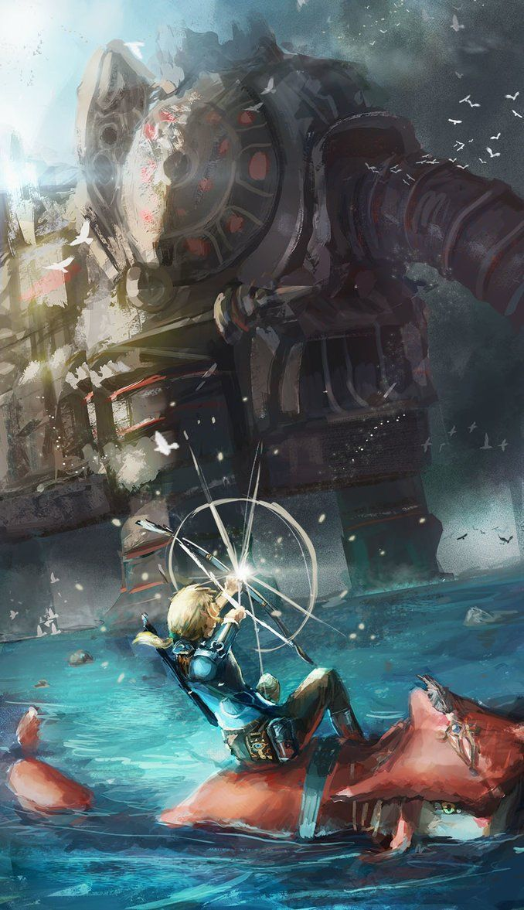

Links Journey
Once Link leaves the platue he comes across two different villages meeting some old friends, who help him regain some of his memory and gives him helpful tools. After this link learns about the divine beasts and their pilots called champions who were suppose to help stop the calamity, but were overtaken by the calamities army. Link explores just about the entire kingdom to reach, enter, and detroy the evil inside all of the divine beasts. During this adventure link learns more and more from the different civilizations and regains more and more memories of his past. After regaining the power of the 4 divine beasts, the spirits of the champions help to pilot them once again.
 WallPaperCave